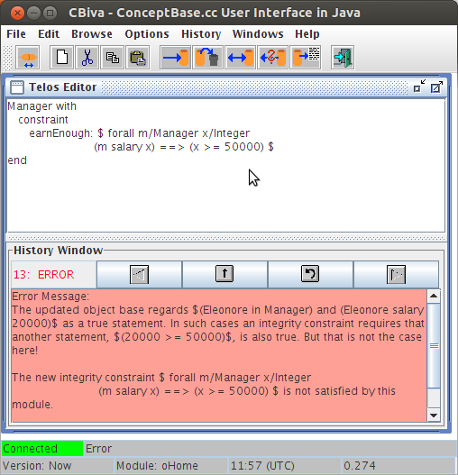
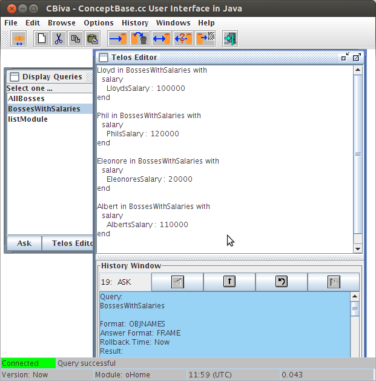
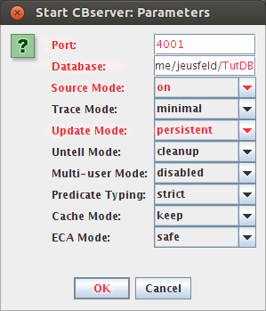
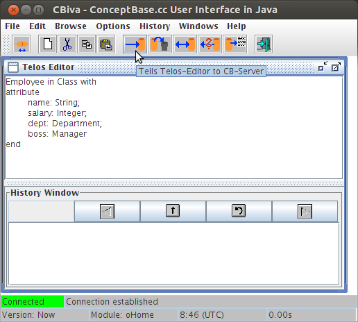
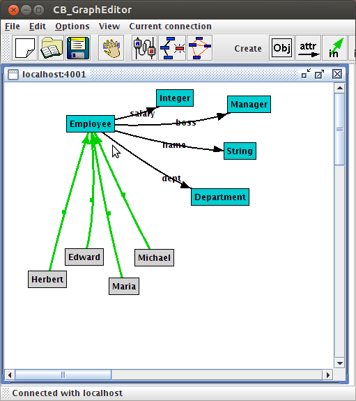
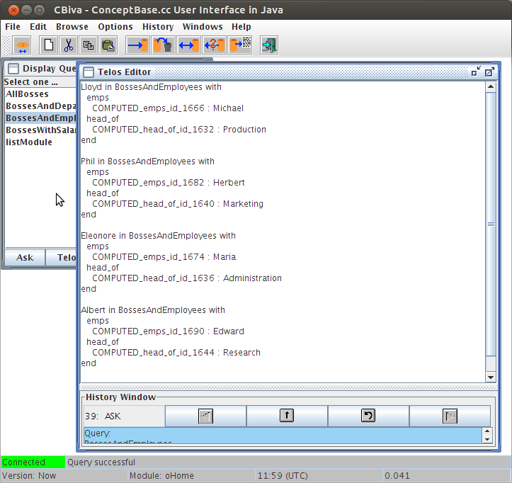

ConceptBase Tutorial
René Soiron, ConceptBase Team |
This tutorial gives a beginners introduction into Telos and ConceptBase. Telos is a formal language for representing knowledge in a wide area of applications, e.g. requirements and process-modelling. It integrates object-oriented and deductive features into a logical framework. ConceptBase is an experimental deductive database management system, based on the Telos data model. It is designed to store and manipulate a database of Telos objects. The tutorial is organized as follows: The next section gives a short introduction into the architectural organization of the ConceptBase system and describes the necessary steps to start the system. Section three explains some basic features of Telos and ConceptBase using a simple example. The last chapter contains solutions to the exercises.
Please note:
The objective of this tutorial is to give a novice user a first intuitive
feeling on how to work with CB and how to build own models, not
to mention all the features of Telos and ConceptBase or describe
the semantics of Telos.
ConceptBase is organized in a client/server architecture. The server manages the database while the client may be any user-defined application program. A graphical client CBIva and a command-line client CBShell are distributed with the ConceptBase system. We use in this tutorial the grahical client. The communication between server and client is realized via Internet protocols, i.e. client and server can run on different computers in your local network or even ob the global Internet. They can also run on the same computer, which is the most frequent way of use. The connection is offered by the ConceptBase server via a so-called port number. Every database is stored in a seperate directory with the name of the database as directory name.
Before working with this tutorial ConceptBase has to be installed properly. This is documented in the installation guide which is available from the site where you downloaded the system, typically http://conceptbase.sourceforge.net/CB-Download.html.
(Skip this step, if your ConceptBase installation is configured to use a
public ConceptBase server, in particular on Windows and Mac OS-X.)
At first start a ConceptBase server:
Exercise 2.1:
cd $CB_HOME
cbserver -help
The string $CB_HOME has to be replaced by the directory path, into which ConceptBase was installed on your local computer. You may want to include this directory path into the search path of your command shell.
A server will start running immediately. If the database TutDB
doesn’t exist, a new database will be created before loading. Then
the copyright notice and parameter settings are displayed, followed
by a message which contains hostname and port number of the ConceptBase
server you have just started. These two informations are used to
identify a server. The host is the one, you are currently logged on to
and the port number is set by the -port parameter. The port number
must be free on the host where ConceptBase shall run.
If this number is already in use by another server, the error message
IPC Error: Unable to bind socket to name
appears and the server stops.
In this case restart the server with another port number.
Clients can communicate with a server through the ConceptBase Usage Environment. The interface contains several tools which can be invoked from the CBIva (ConceptBase User Interface in Java). Start CBIva by entering the following commands in a new command window:
cd $CB_HOME
cbiva
After a few seconds a window will appear which
is titled “CBIva - ConceptBase User Interface in Java”. It consists of a main window, statusline
at the left buttom, and offers several function keys and menu-items. A complete description of
these menus is given in the User Manual. Depending on your operating system, you can also
double-click the file ’cbiva’ (resp. ’cbiva.bat’) in the installation directory of ConceptBase.
Exercise 2.2:
Establish a connection between CBIva and
the server you have started under 2.1
After the connection is established the first field of the statusline contains the status "connected".
Note: If your ConceptBase installation uses a public ConceptBase server,
then you can skip this step because your CBIva window automatically
connects to the public server.
In this section the use of basic tools and concepts will be illustrated by modelling the following simple scenario:
A company has employees, some of them being managers. Employees have a name and a salary which may change from time to time. They are assigned to departments which are headed by managers. The boss of an employee can be derived from his department and the manager of that department. No employee is allowed to earn more money than his boss.
The model we want to create contains two levels: the class level containing the classes Employee, Manager and Department and the token level which contains instances of these 3 classes.
The first step is to create the three classes used: Employee, Manager and Department. Enter the following definition into the CBIva’s top window labelled Telos Editor:
Employee in Class end
This is the declaration of the class Employee, which will contain every employee as instance. Employee is declared as instance of the system class Class, because it is on the class level of our example, i.e. it is intended to have instances.
To add this object to the database, press the Tell button. If no syntax error occurs and the semantic integrity of the database isn’t violated by this new object it will be added to the database. The next class to ad is the class Manager. Managers are also employees, so the class Manager is declared as a specialization of Employee using the keyword isA:
Manager in Class isA Employee end
Press the Clear button to clear the editor field.
Enter the telos frame given above and add it to the database by telling it.
The final class to be added is the class Department.
Exercise 3.1:
Define a class Department and add it to the database.
At this point we have added some new classes to the object base, but have told nothing about the so called attributes of these classes. The modification of the classes we have just entered is the next task.
As mentioned in the description of the example-model, the employee-class has several attributes. To add them, we need to modify the Telos frame describing the class Employee.
Exercise 3.2:
Load the object
Employee via the load frame button and
modify it as follows:
Employee in Class with
attribute
name: String;
salary: Integer;
dept: Department;
boss: Manager
end
Tell the modified Employee frame to the database. Now you have added attributes to the class Employee. They are of the category attribute and their labels are: name, salary, dept, and boss. They establish “links” between the class Employee and the classes mentioned as “targets”. Department and Manager are user-defined classes, while String and Integer are builtin classes of ConceptBase.
Notice that these attributes are also available for the class
Manager, because this class is a subclass of Employee
(i.e. Telos offers attribute inheritance, see also chapter 2.1
of the User manual, Specialization axiom).
Exercise 3.3:
The class Department has only one attribute: the manager,
who leads the department. Add this attribute to the class Department.
The label of this attribute shall be head.
Now we have completed the class-level of our example. The next step is to add instances of our classes to the database.
The company we are modelling consists of the 4 departments
Production, Marketing, Administration and Research.
Every employee working in the company belongs to
a department. The employees will be listed later, apart
from the managers of the departments:
| department | head |
| Production | Lloyd |
| Marketing | Phil |
| Administration | Eleonore |
| Research | Albert |
At first let’s have a look at the department class, defined in exercise 3.3:
Department in Class with
attribute
head: Manager
end
There is a link between Department and Manager of category attribute with label head at the class-level. Now we have to establish a link between Production and Lloyd of category head at the token-level. The label of this link must be a unique name for all links with the source object "Production". We choose head_of_Production as name.
The resulting Telos frame is:
Production in Department with
head
head_of_Production : Lloyd
end
Exercise 3.4:
| manager | salary |
| Lloyd | 100000 |
| Phil | 120000 |
| Eleonore | 20000 |
| Albert | 110000 |
Add this information to the database.
Use "LloydsSalary", "PhilsSalary", etc. as labels.
(Remember that you can load an existing object from the database into
the Telos Editor by using "Load frame".)
The destination objects of attribute instantiations must be existing objects in the database or instances of the system builtin classes Integer, Real or String. Objects which instantiate these classes are generated automatically when referenced in a Telos-frame. At this point it is important to recognize, that attributes specified at the class level do not need to be instantiated at the instance level. On the other hand an instance of a class containing an attribute may contain several instances of this attribute.
Example:
George in Employee with
name
GeorgesName: "George D. Smith"
salary
GeogesBaseSalary : 30000;
GeorgesBonusSalary : 3000
end
The attribute dept and boss have no instances, while salary is instantiated twice.
To complete the token level, we have to add more employees to
the database.
Exercise 3.5:
Add the following employees to the database. Use MichaelsDepartment etc. as labels for the attributes.
| employee | department | salary |
| Michael | Production | 30000 |
| Herbert | Marketing | 60000 |
| Maria | Administration | 10000 |
| Edward | Research | 50000 |
Now the first step in building the example database is completed.
The next chapter describes a basic tool of the usage environment
which can be used for inspecting the database: the GraphBrowser.
To start the Graph Editor, choose the menu item Browse from the Workbench and select Graph Editor. The Graph Editor will start up and establish a connection to the same server as the workbench, if the workbench is currently connected. You can establish additional connections from within the Graph Editor application. If the Graph Editor has established the connection and loaded the initial data (note: this takes about 10 seconds), you can add an object to the editor window by clicking on the “Load object” button. An interaction window appears, asking for an object name. After entering a valid name (e.g. Employee) the Graph Browser displays the corresponding object. By clicking the left mouse-button, every displayed object can be selected. A selected object can be moved by dragging the object with the left mouse-button pressed. By clicking on the right mouse-button, a popup-menu will be shown with the following operations:
Exercise 3.6:
Start a GraphBrowser, and load "Employee" as initial object and
experiment with the menu options available.
At this point you should have made some experiences with the editing- and browsing-facilities of the ConceptBase Usage Environment and the Telos language. This chapter gives an introduction into the use of rules and integrity constraints.
Until now we have never instantiated the boss-attribute of an employee. The boss can be derived from the department the employee is assigned to and the head of this department. So its obvious to define the instances of the boss-attribute by adding a rule to the Employee-Frame.
At first we’ll give a short introduction into the syntax of the assertion language. The exact syntax is given in the appendix of the user manual.
A deductive rule has the following format:
forall x1/c1 x2/c2 ... xn/cn <Rule> ==> lit(a1,...,am)
where <Rule> is a formula and the xi’s are variables bound to the
class ci, lit is a literal of type 1 or 3 (see below) and the variables among
the ai’s are included in x1,..,xn.
To compose the formula defining a deductive rule or integrity constraint the following literals may be used:
In order to avoid ambiguity, neither "in" and "isA" nor the logical connectives "and" and "or" are allowed as attribute labels.
The next literals are second class citizens in formulas. In contrast to the above literals they cannot be assigned to classes of the Telos database. Consequently, they may only be used for testing, i.e. in a legal formula their parameters must be bound by one of the literals 1 - 3.
"and" and "or" are allowed as infix operators to connect subformulas. Variables in formulas can be quantified by forall x/c or exists x/c, where c is a class, i.e. the range of x is the set of all instances of the class c.
The constants appearing in formulas must be names of existing objects in the database or of type Integer, Real or String. Also for the attribute predicates (x l y) occuring in the formulas there must be a unique attribute labelled l of one class c of x in the database. For the exact syntax refer to the appendix of the user manual.
We’ll give a first example of a deductive rule by defining the boss of an employee:
Employee with
rule
BossRule : $ forall e/Employee m/Manager
(exists d/Department
(e dept d) and (d head m))
==> (e boss m) $
end
Please note that the text of the formula must be enclosed in "$" and that this deductive rule is legal, because all variables appearing in the conlusion literal (e,m) are universally (forall) quantified. The logically equivalent formula
forall e/Employee m/Manager d/Department
(e dept d) and (d head m)
==> (e boss m)
can also be used.
Exercise 3.7:
Add the BossRule to the database.
The following integrity constraint specifies that no Manager should earn less than 50000:
Manager with
constraint
earnEnough: $ forall m/Manager x/Integer
(m salary x) ==> (x >= 50000) $
end
Please note that our example model doesn’t satisfy this constraint, because Eleonore earns only 20000. If you use 20000 instead of 50000, the model satisfies this constraint and adding it will be successfull.

Figure 1: Telos Editor after the attempt to tell the integrity constraint
Figure 1 shows the Telos editor after the attempt to tell the
above integrity constraint. The error message is shown in the error
window.
Exercise 3.8:
Define an integrity constraint stating that no employee
is allowed to earn more money than any of her/his bosses. (The constraint
should work on each individual salary, not on the sum).
In the subdirectory RULES+CONSTRAINTS of the example directory there is a more extensive example concerning deductive rules and integrity constraints. It should be used in addition to this section of the tutorial.
In ConceptBase queries are represented as classes, whose instances are the answer objects to the query. The system-internal object "QueryClass" may have so-called query classes as instances, which contain necessary and sufficient membership conditions for their instances.
Exercise 3.9:
Load the object "QueryClass" into the Telos Editor window.
The syntax of query classes is a class definition with superclasses, attributes, and a membership condition. The set of possible answers to a query is restricted to the set of common instances of all its superclasses.
The following query computes all managers, which are bosses of an employee:
QueryClass AllBosses isA Manager with
constraint
all_bosse_srule:
$ exists e/Employee (e boss this) $
end
The predefined variable this in the constraint is identified with all solutions of the query class.
Enter this query into the editor-window and press Ask (not Tell). The query will be evaluated by the server and after a few seconds the answer will appear both in the protocoll- and in the editor-window. If an error has occured and the query was typed correctly, load the Employee-frame and check if the frame contains the BossRule, defined in chapter 3.3.
If the answer was correct we add the query class AllBosses to the database. The next query uses this query class to restrict the range of the answer set:
QueryClass BossesWithSalaries isA AllBosses with
retrieved_attribute
salary : Integer
end
Before this Query can be evaluated AllBosses must be told, because it is referenced in BossesWithSalaries.
This query returns the instances of AllBosses together with their salaries.
Attributes of the category retrieved_attribute must be attributes of
one of the superclasses of the query class. In this example BossesWithSalaries
is a subclass of AllBosses, which is subclass of Manager, which is subclass of Employee.
The Employee class contains
the declaration of the attribute salary. So the retrieved_attribute is permitted
for BossesWithSalaries.
Exercise 3.10:
Add the query class "BossesWithSalaries" to the database.
Query classes can also define computed_attributes. These attributes are defined for the query class itself, but unlike as for retrieved attributes they do not occur in the definition of the superclasses of the query class. They are called computed, because their computation is done during evaluating the constraint at runtime. Computed_attributes don’t exist persistently in the database, that’s why they don’t get a persistent attribute label. Instead, the labels of the computed attributes of the answer objects are system-generated.

Figure 2: Result of asking the query BossesWithSalaries
Figure 2 shows the Telos editor after asking
the query BossesWithSalaries.
The following query class computes for every manager the department that he or she leads:
QueryClass BossesAndDepartments isA Manager with
computed_attribute
head_of : Department
constraint
head_of_rule:
$ (~head_of head this) $
end
Exercise 3.11:
Define a query class BossesAndEmployees, which is a subclass
of Manager and will return all leaders of departments with their
department and the employees who work there.
More information about query classes can be found in the User manual,
chapter 2.3 and in the example directory QUERIES.
Exercise 3.12:
Stop the ConceptBase server and the user interface.
This last step completes the tutorial. We hope that it provided a first impression on ConceptBase and Telos. Refer to the other examples, especially to RULES+CONSTRAINTS and QUERIES and of course to the user manual to learn more about the features of ConceptBase. There is also a more advanced tutorial available on metamodeling.
Any comments and suggestions concerning this tutorial or ConceptBase are welcome. Contact us via http://conceptbase.cc.
Enter in the same command window the following command:
cbserver -port 5544 -d TutDB
You can also use the option -db instead of -d:
cbserver -port 5544 -db TutDB
In this case, ConceptBase will maintain the Telos source representation of all objects in the database directory TutDB. Your own definitions will go to the file System-oHome.sml, because that is the default database module when you log into a ConceptBase server.
An alternative to starting the ConceptBase server from the command line is
to start it from CBIva. To do so, start CBIva and the select the menu item
File / Start CBserver. A window like in figure 3 will pop up and
you need to change the following parameters:
Then press "OK" to let CBIva start a ConceptBase server with the specified parameters and connect to it.

Figure 3: Start CBserver from CBIva
Select "Connect" from the File menu. An interaction window appears, querying the host name and the port number of the server you want to connect to. Enter the name of the host the ConceptBase server was started on and the port number specified by the -p parameter, then select "Connect". If you started the ConceptBase server on the same computer as CBIva, then use ’localhost’ as hostname.
This step is obsolete, if you started the ConceptBase server from within CBIva.
Department in Class end

Figure 4: CBIva Telos Editor
Department in Class with
attribute
head: Manager
end
Lloyd in Manager end
Phil in Manager end
Eleonore in Manager end
Albert in Manager end
Production in Department with
head
head_of_Production : Lloyd
end
Administration in Department with
head
head_of_Administration : Eleonore
end
Marketing in Department with
head
head_of_Marketing : Phil
end
Research in Department with
head
head_of_Research : Albert
end
Lloyd in Manager with
salary
LloydsSalary : 100000
end
Phil in Manager with
salary
PhilsSalary : 120000
end
Eleonore in Manager with
salary
EleonoresSalary : 20000
end
Albert in Manager with
salary
AlbertsSalary : 110000
end
Michael in Employee with
dept
MichaelsDepartment : Production
salary
MichaelsSalary : 30000
end
Maria in Employee with
dept
MariasDepartment : Administration
salary
MariasSalary : 10000
end
Herbert in Employee with
dept
HerbertsDepartment : Marketing
salary
HerbertsSalary : 60000
end
Edward in Employee with
dept
EdwardsDepartment : Research
salary
EdwardsSalary : 50000
end
Figure 5 shows the ConceptBase graph editor on object Employee. The attributes of Employee and its instances are expanded using the menu of the right mouse button clicked on Employee.

Figure 5: CB Graph Editor on object Employee
Employee with constraint salaryIC: $ forall e/Employee m/Manager x,y/Integer (e boss m) and (e salary x) and (m salary y) ==> (x <= y) $ end
QueryClass BossesAndEmployees isA Manager with
computed_attribute
emps : Employee;
head_of : Department
constraint
employee_rule:
$ (~head_of head this) and (~emps dept ~head_of) $
end
Figure 6 shows parts of the answer to the query BossesAndEmployees.

Figure 6: Display of answers of BossesAndEmployees
Select the option "Stop CBserver" from the "File" menu of CBIva. Afterwards, stop CBIva via the "Exit" option in the same menu. If you started the ConceptBase server with the -db option (or with source mode set to ’on’), then you find the sources of your definitions also in the directory TutDB, see file System-oHome.sml. Open this file with a text editor such as WordPad.
This document was translated from LATEX by HEVEA.